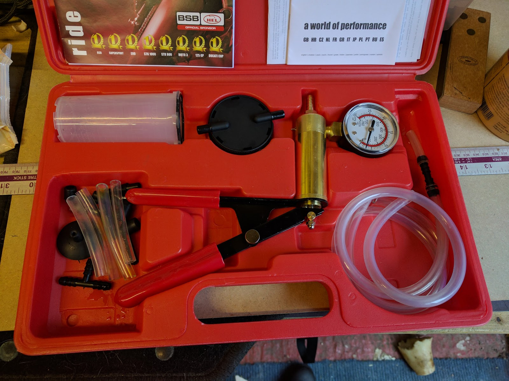

Project Z750 part 32
Okay, the new vacuum brake bleed kit has arrived.

Time to try it out.
The kit is quite easy to put together. there is a diagram of how to attach the vacuum pump to the collection jar, and all of the pipes go on easily enough (but not so easy that they’ll pop off in use).
okay, so vacuum connected to one side, other side connected to bleed nipple. pump up the vacuum pressure, then open the bleed nipple. lots of bubbles and some fluid coming through, great. I had to keep an eye on the master reservoir to make sure it had enough fluid in it, but that’s not too bad to do.
so I keep pumping to keep the vacuum pressure, open the bleed nipple to let some air and fluid out, and keep an eye on the reservoir, topping up as necessary.
After a while fluid stopped coming through to the jar. it seemed as though it was just air coming through. A closer look at the bleed nipple and I could see that there was air getting into the kit’s tube even when the nipple was closed, so it doesn’t seal perfectly. okay, but it seems to seal enough to give me a vacuum and that’s the point, so I continue for a while more. no joy. still just air getting through.
I did this on both front calipers and was just getting air. My wife asked if I’d put PTFE tape round the bleed nipple when I screwed it in. I hadn’t and so we took the nipple out of one of the calipers to put some tape round the thread. While it was out I compared it to the original (I had ordered new stainless nipples with the new caliper pistons). It seemed about 2 mm longer. that could also be a problem.
So we swapped back to the original nipples (now with PTFE tape round the threads). Put the calipers back on the bike, and bleed them again (using old fashioned method - Press brake lever then open and close nipple).
Quite quickly we stopped getting bubbles out but the lever was still quite soft and would go all the way back to the handlebar.
My wife did suggest that I try adjusting the brake lever, and in my ultimate wisdom I informed her that adjusting the lever was just for accommodating different hand sizes and wouldn’t make a difference. Of course adjusting the lever did make a difference, but not quite enough.
At this point I remembered that holding the lever closed (with a bungee) overnight would help get any air left in the system to raise up to the reservoir where it would escape.
So I bungeed the lever closed and left it for a few hours. when I came back and released the bungee, there was pressure in the system. finally we’ve got brakes.